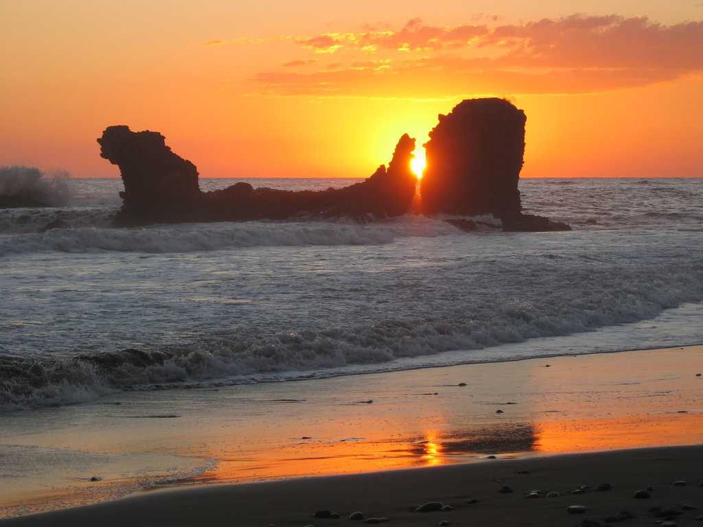
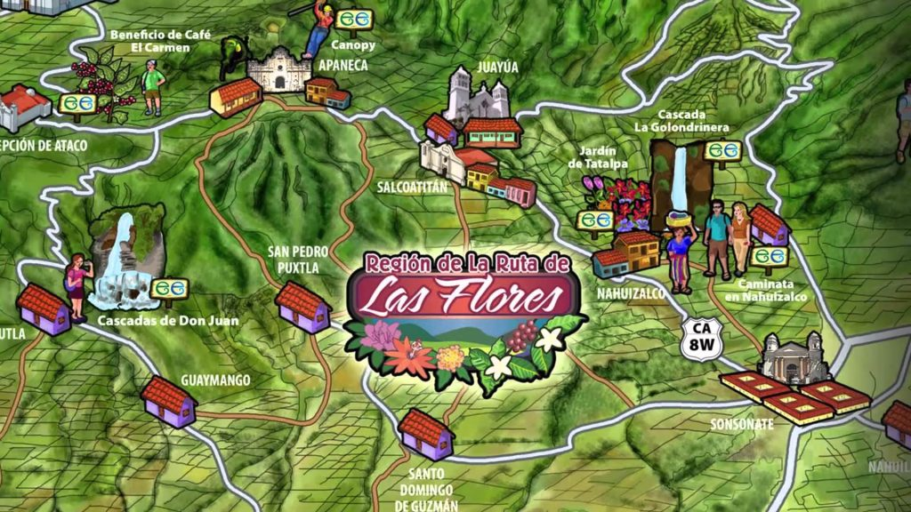
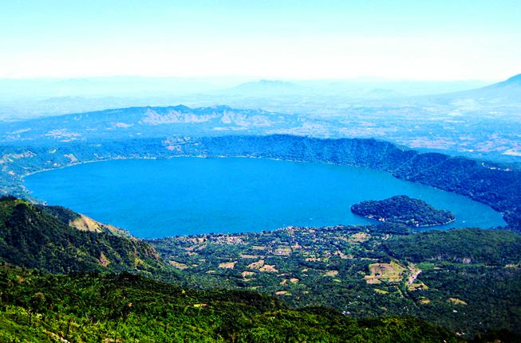

Turismo en El Salvador
Descubre los destinos más increíbles de El Salvador.

Playa El Tunco
Famosa por sus olas perfectas para surf y ambiente nocturno relajado.

Volcán de Izalco
Conocido como el Faro del Pacífico por sus antiguas erupciones.

Ruta de las Flores
Pintoresco recorrido por pueblos coloridos y cafetales.

Lago de Coatepeque
Hermoso lago de origen volcánico con aguas cristalinas.

Suchitoto
Ciudad colonial conocida por su arquitectura y cultura.